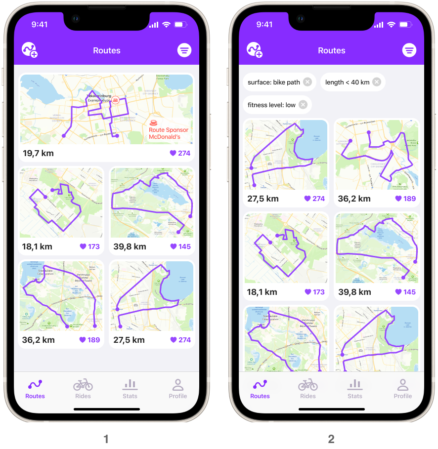

Приложение для организации велопоездок
Задача из тестового задания.
Постановка задачи
Создать приложение для организации поездок на велосипеде. В рамках тестового задания нужно:
- Провести исследование, чтобы понять, что это будет за приложение.
- Спроектировать три экрана приложения.
Решение
1. Исследование
Я провела 4 интервью с велосипедистами разных уровней подготовки, стилей езды и предпочтений по поездкам.
Вопросы для интервью
- Как давно катаешься на велосипеде?
- Тип езды: любишь быстро или расслабленно?
- На какие расстояния ездишь?
- На сколько часов поездка?
- Местность: город или лес, трасса?
- Телефон обычно в рюкзаке или где-то под рукой?
- Как поступаешь с едой, если долгая поездка?
- Обычно в компании или один?
- Какие проблемы при планировании поездок?
- Легко ли найти компанию и договориться?
- Легко ли составить маршрут? Как выбираете?
- Что нравится поездках (общение, природа, места, физактивность)?
- Что не нравится? Что хотелось бы улучшить, изменить, чего не хватает?
- Представь, что есть волшебное приложение для организации поездок. Что оно должно уметь, в чем помогать? Самые фантастические желания.
- Представь, что есть приложение, которое предложит тебе:
- Выбрать или составить маршрут.
- Поможет собрать группу для поездки.
- Предложет скидки в кафе по маршруту.
- Покажет туалеты на карте, если едешь по городу.
- В приложении есть платные и бесплатные возможности. Воспользуешься ли им?
Ответы респондентов
Респодрентка 1
- Катается лет 8, не часто.
- Любит кататься небыстро, осторожно, боится упасть. Любит по велодорожкам, проезжей части избегает.
- В начале сезона около 10 км, потом можно и на 30 км.
- Пара часов на неделе, 4 на выходных.
- Не дремучий лес, город, парки.
- Держатель на руле, ездит с трекером.
- Нет.
- 2-3 человека, иногда до 30.
- Проблем особых нет. Составить маршрут проблема. Доехать до маршрута тоже.
- Нет проблем найти. Обычно пару друзей беру.
- Знать исследованные маршруты.
- Просто ехать, катиться, по паркам.
- Сейчас проблемы со спиной, надо подобрать вел. Сложности с парковкой, если хочется зайти в кафе.
- Показать: где есть велодорожки. Безопасные парковки. Исследованные маршруты.
- Купить приложение не готова, ездит редко, но бесплатными фичами бы пользовалась.
Респодрентка 2
- Катается 4 года активно, а так с детства.
- Не очень быстро, потому что в компании.
- 70-80-100 км, или 15 км до работы.
- На целый день.
- Леса. Иногда на электричке до маршрута и потом уже на веле.
- В поясной сумочке. Есть умные часы.
- Иногда небольшой перекус. Но бывало и с котелком. Чаще только воду.
- Компания. Одна только на работу.
- Нет проблем, все планирует Макс :)
- Если сама собирает, то 3-4 человека. Зазывает красивыми видами, фоточками, кофем.
- Тяжело строить маршрут. Хочу лес, без машин, без подъемов. Сложно встать рано :)
- Красивая природа, состояние путешествия, приключения, заряжаешься от этого. Приятная нагрузка. Фоточки.
- Макс думает за все, за инструменты тоже. Но было, что связи не было в некоторых местах — это прямо совсем плохо, если потерялся. Бывает дорога в г... после дождя, знать бы как объехать. Горки не нравится, хочу знать, где они есть, где нет.
- Хочу знать, кто где на маршруте, когда собираемся и в поездке, метки людей. Чек-листы, что не забыть взять с собой (вода, комары, баф, еда, кто что берет). Маршруты. Интегрировать отчеты из Стравы. Считать суммарный пробег, чтобы вовремя проходить ТО по отдельным частям вела. Советы по выбору велика начинающим.
- Важно удобство использования приложения, это ключевое, потому что есть серьезные конкуренты типа Стравы. Любит статистику, поэтому хотела бы тут ее смотреть. Пользовалась бы.
Респодрент 3
- Катается с детства.
- По ситуации, бывает и быстро, бывает и медленно.
- По ситуации, бывает и быстро, бывает и медленно.
- На весь день.
- Лес, трасса, ЮЗ-лесопарк. Зимой по городу.
- Телефон обычно убран.
- Чаще в кафе, иногда перекусы. Планирует заранее в где можно будет поесть.
- Чаще катает один. Но в компании тоже ездит.
- Сложно строить маршруты, потому что едешь по новому и упираешься во что-то закрытое или непроходимое. Обычно катает по старым своим маршрутам.
- Тяжело ищется.
- Маршруты сложно строить.
- Это как путешествие, природа нравится. Запахи.
- Запчасти сложно искать, дорого. Экипировка. Сейчас из-за санкций все очень дорого и выбора нет. Некачественное.
-
Каждые выходные волшебное приложение предлагает маршруты на выбор. Их лайкают или как-то отвечают, что поедут. И потом смотришь, сколько человек на него подписалось и едешь. Компания собирается сама, тебе ничего не надо делать.
Нужен еще прогноз погоды. Где закупиться, магазы и где поесть. Достопримечательности на маршруте. Где можно сесть на электричку, если устал.
Чек-листы, чем закупиться. Приложение видит длину маршрута, считает, сколько каллорий потеряешь и составляет примерный список, сколько надо съесть и выпить, чтобы восполнить запасы энергии.
По ТО, чтобы можно было заводить, когда поменял что-то и какой у этой детали ресурс, чтобы приложение напомнило.
Разную статистику. По маршруту, чтобы можно было фильтровать «только грунт», «только по дороге».
Игровая механика, ачивки, достижения. В каком-то приложении надо закрасить все квадратики на карте — места, где ты был. Социальная составляющая, фоточки. Рекорды и квесты. Нужны клубы. Типа как сообщества. Тренировки товарищей и другая статистика.
- Пользовался бы приложением.
Респодрент 4
- Катается 11 лет.
- Тип езды: расслбленная большую часть времени.
- На работу бывает, а если нет, то 10-20-30 км.
- 2-4 часа.
- Смешанная местность. По городу или трассе быстрее по времени, но расстояние больше, а по лесу дольше по времени и расстояния меньше.
- Телефон на руле.
- С собой вода, перекус редко, если есть, то батончик. Обычно когда в лес, есть перекус. Если короткие поездки и город, то в кафе.
- Обычно один, компанию тяжело собрать.
- Не ясно заранее, комфортный ли участок дороги. Часто популярные маршруты Стравы совпадают с пешеходными, пересечение потоков это не удобно. Хотелось бы инфу по дороге: если трасса, есть ли асфальтированная обочина. Если лес — тропинки или дремучий лес. Город — велодорожки. То есть типы покрытия. Перепады высот надо знать, но это сложная инфа для новичков, надо ее как-то визуализировать. Приколько бы, если бы люди лайкали куски маршрута, чтобы было понятно, что тут ок ехать, а тут нет. Не хватает каталога маршрутов.
- В 30 всегда сложно искать компанию.
- В п.9 подробно говорили про маршруты. Составить маршрут не проблема, сложнее выбрать один из вариантов пути. Обычно хочу составить маршрут к какому-то объекту, например: хочу посмотреть вот ту лужу в той деревне и выпить там чай.
- Нравится ощущение полета. Возможность добраться туда, куда не дойдешь ногами, а авто я не рассматриваю.
- Иногда небезопасно, с этим приходится мириться: автотрассы, пешеходы. Нехватка инфраструктуры: набрать воды, отдохнуть в тихом месте, чтобы не на обочине трассы. Нет возможности уехать туда на электричке, а вернуться на веле. Непонятно, куда и зачем ехать. Некоторые маршруты хочется покатать, но нужен другой тип вела — тут бы прокат велов, но мало инфраструктуры.
- Каталог маршрутов с числом людей, которые катались по нему. Перепады высот, длительность. Готов вписываться с масштабные группы 10-15-30 человек, это безопаснее, чем с 2-3 незнакомцами. Если еще у поездки верифицированный организатор, вообще здорово. Платные и бесплатные поездки. Поездки от магазинов и велопрокатов. Доставка прокатного вела домой. На маршрутах нужны points of interest, всякие беседки, холмики, интересные места, достопримечательности.
- Попробовал бы это приложение ради совместных поездок (events) и ради прокатных велов на интересных маршрутах.
Выводы из интервью
Я выявила текущие проблемы велосипедистов и их потребности, когда они планируют поездки на велосипеде.
- У всех участников опроса есть проблемы с составлением маршрутов. Не понятно проходимые ли дороги, нет ли препятствий, предупреждения об участках без мобильной связи.
- Многим важно знать заранее, какой тип дороги: асфальт, велодорожка, трасса, лесные тропы с грунтом.
- Есть проблема собрать компанию для поездки.
- Есть проблема с обедами в кафе — у многих кафе хранить велосипеды не безопасно, угоняют.
- Удобно было бы, если бы приложение напоминало о том, когда надо менять или обслуживать запчасти.
Рекомендации
- Предложить заранее продуманные проходимые маршруты, с информацией: по дорожному покрытию, длине маршрутов и их сложности (про длительные подъемы в гору хотят знать заранее).
- Запартнериться с кафе, которые могут предложить безопасное хранение велосипеда во время обеда и скидки для велосипедистов.
- Отметить на карте кафе, велопарковки, аптеки.
- При организации поездки дать возможность приглашать участников и общаться с ними.
- В перспективе можно добавить раздел пр отехническое обслуживание велосипеда, с напоминаниями и рекламой тех. станций.
2. Аналитика
После интервью стало понятно, какие сценарии есть у пользователей, какие фичи должны быть в приложении, чтобы решить проблемы и потребности пользователей.
- Я составила Story Map, чтобы понять, какие сценарии пользователей должны быть реализованы в приложении.
- Детализировала: какие экраны и фичи нужны для покрытия этих сценариев и решения проблем пользователей.
- Выделила основные фичи для первого релиза.
- Выбрала для проектирования три экрана:
- Routes — список маршрутов с фильтрацией.
- New Ride — экран создания новой поездки.
- On the Way — экран с картой в процессе поездки.
3. Прототипы
Routes
Список маршрутов.
- Главный экран — это список маршрутов. В верхней части на всю ширину показываем маршрут спонсора.
- Пользователь может отфильтровать список по своим предпочтениям.
New Ride
Создание новой поездки.
На предыдущем экране пользователь выбрал маршрут для новой поездки. Здесь он указал время старта и добавил участников.

По клику карта открывается на весь экран. На ней отмечены интересные места, аптеки, велостанции. Там же пользователь может выбрать кафе для обеда.
На экране новой поездки он видит погоду на ближайшее время. Он может перейти в чат с участниками или начать поездку.
On the way
Во время поездки.

Пользователь нажал кнопку старта. На полный экран открылась карта. На ней показаны метки участников поездки. Цвет маршрута определяется высотой подъема.
Можно включить слои, чтобы показать на карте: интересные места, кафе, аптеки, велостанции. Можно открыть чат с участниками.
Если потянуть вверх нижнюю шторку, сначала покажется график с высотами.
Если потянуть шторку выше, появится кнопка окончания поездки и кнопка SOS. С помощью SOS можно отправить сообщение всем ближайшим велосипедистам на разных маршрутах.